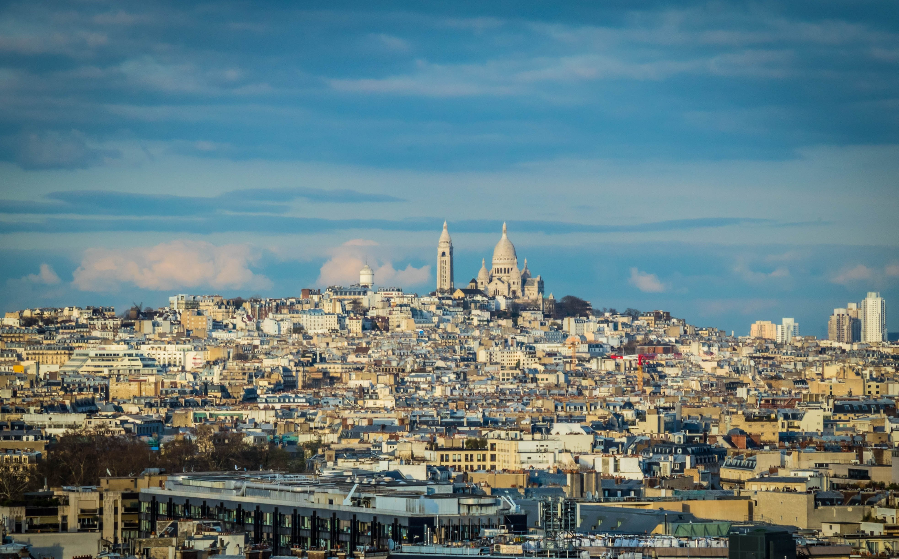
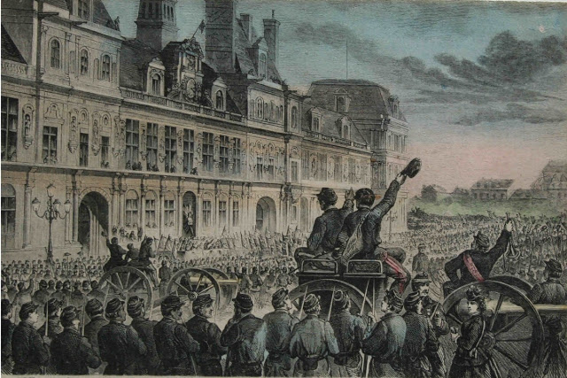

Montmartre
Borgo artistico e cuore bohémien: vicoli, piazze e atelier tra i più iconici di Parigi.
Approfondisci →Panoramica dei luoghi della prima giornata.

Borgo artistico e cuore bohémien: vicoli, piazze e atelier tra i più iconici di Parigi.
Approfondisci →
Simbolo di pace e fede dopo il 1871; panorama fra i più belli della città.
Approfondisci →
Breve stagione rivoluzionaria che influenzò la storia sociale e politica europea.
Approfondisci →Durata indicativa: 4–5 ore complessive